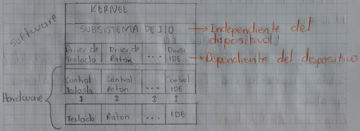

El Administrador I/O
El código destinado a manejar dispositivos de entrada / salida representa una fracción importante de un sistema operativo.
Dispositivos Controladores
Los dispositivos controladores de I/O se pueden clasificar en dispositivos de almacenamiento, dispositivos de comunicación y dispositivos de interfaz humanos. Otra clasificación puede entrar dada como dispositivos de bloques y dispositivos tipo carácter. Las unidades de I/O consisten típicamente de una parte mecánica y una parte electrónica conocida como controlador de dispositivos. El sistema operativo solo se comunica con el controlador. La parte del SO encargada de ello es el manejador o driver del dispositivo. La interfaz entre el controlador y la parte mecánica es de muy bajo nivel
I/O Estructurado En Capas
En I/O se puede estructurar en forma eficiente y modular usando capas. Cada capa se encarga de una tarea especifica y ofrece una interfaz bien definida a la capa superior.

El subsistema de I/O es independiente del dispositivo. Los manejadores de dispositivos contienen todo el código que es dependiente del dispositivo, cada dispositivo diferente requiere un driver. La tarea del driver es la de aceptar ordenes abstractas (independientes del dispositivo) de la capa superior (como por ejemplo, leer el bloque n) traducirlo a ordenes concretas (dependientes del dispositivo) y dar estas ordenes al controlador correspondiente
Tareas Del Subsistema I/O
Planificación: Ejecutar las solicitudes de I/O en el mismo orden en que el SO las recibe de los procesos; no siempre lo mas eficiente. Muchas veces conviene usar otros criterios para escoger la siguiente solicitud a ejecutar entre las solicitudes pendientes para un determinado dispositivo
Buffering: Un buffer es un espacio de memoria reservado para el almacenamiento temporal de datos, para acomodar disparidades entre las velocidades de un dispositivo productor de datos y un dispositivo consumidor, o diferenciar en tamaños de bloques.
Caching: Un caché es una región de la memoria que contiene copias de los datos que residen en dispositivos más rápido, puesto que no es necesario accesar el dispositivo lento.
Spooling: Un spool es un buffer que contiene la salida para un dispositivo de caracteres tal como una impresora en la cual no se puede mezclar la salida de varios procesos mediante spooling los procesos tienen la ilusión de estar imprimiendo simultáneamente pero en realidad el SO esta almacenando la salida del proceso para imprimirla de una sola vez cuando el proceso termine.
Manejo De Errores: Parte del manejo de errores la realiza el subsistema I/O. El manejo de errores se hace principalmente en el driver, pues la mayoría de errores son dependientes del dispositivo (y por ende solo el driver puede saber que hacer sobre todo si el error es transitorio). Por ejemplo, si el driver recibe un mensaje de error del controlador al intentar leer un bloque, reintentará varias veces antes de reportar el error a la capa superior. Entonces el subsistema de I/O decide que hacer es una forma independiente del dispositivo.